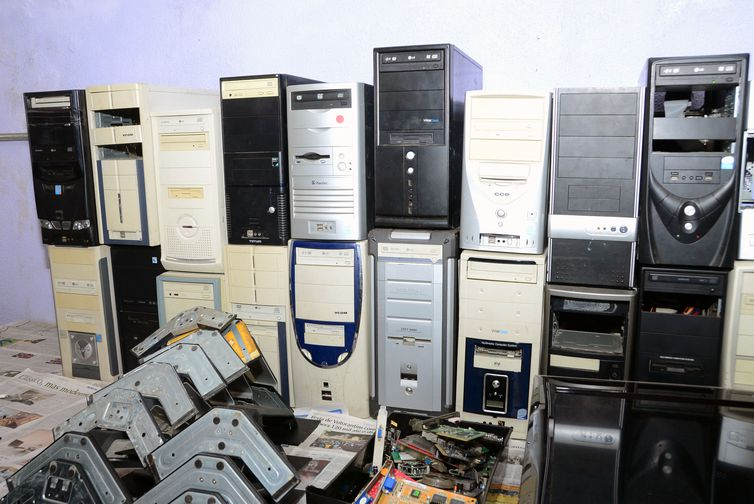

Entenda: novas regras para recolhimento de lixo eletrônico
Assinado nesta semana pelo presidente Jair Bolsonaro, o decreto 10.240 de 2020 estabelece as regras para implementação do sistema de logística reversa para produtos eletroeletrônicos. O texto regulamenta o mecanismo previsto na Política Nacional de Resíduos Sólidos, sancionada em 2010, para que os fabricantes e importadores desses itens se responsabilizem pelo descarte de forma a reduzir os impactos no meio ambiente.
Assinado nesta semana pelo presidente Jair Bolsonaro, o decreto 10.240 de 2020 estabelece as regras para implementação do sistema de logística reversa para produtos eletroeletrônicos. O texto regulamenta o mecanismo previsto na Política Nacional de Resíduos Sólidos, sancionada em 2010, para que os fabricantes e importadores desses itens se responsabilizem pelo descarte de forma a reduzir os impactos no meio ambiente.
É importante que fabricantes e importadores disponibilizem uma rede para que os consumidores levem os eletroeletrônicos fora de uso para o descarte adequado. Essa destinação final deve garantir que os componentes dos aparelhos não contaminem o meio ambiente. Está prevista a possibilidade de reciclagem desses materiais, uma vez que muitas das matérias-primas tem alto valor e podem ser reaproveitadas.
O decreto estipula que a constituição das entidades que vão fazer a gestão da logística reversa seja feita ainda este ano, até o dia 31 de dezembro. Assim, a partir de 2021, devem começar a ser instalados os pontos de coleta e a divulgação do sistema aos consumidores.
O sistema deve ser implantado, até 2025, nos 400 maiores municípios do país. O cronograma é gradativo. Em 2021, primeiro ano de funcionamento, deve ser atendidas 24 cidades e absorvido 1% do lixo eletrônico. São Paulo é o estado que deverá ter maior participação, com oito dessas localidades, no primeiro ano, e 95 ao fim do calendário de consolidação. A estimativa é que, em cinco anos, 17% dos aparelhos sejam recolhidos.
As cidades deverão ter, no mínimo, um ponto para cada 25 mil habitantes. A previsão é que em 2025 existam cerca de 5 mil pontos de coleta no país. Esses locais vão receber de forma gratuita os aparelhos para serem descartados.
Fonte: Agência Brasil